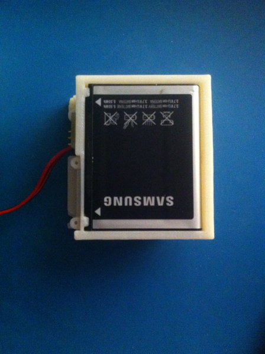
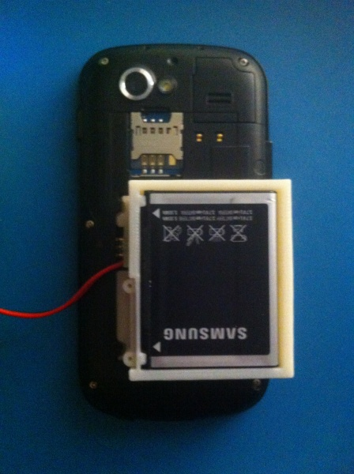
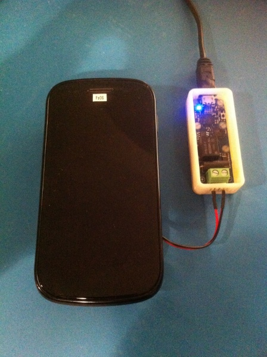
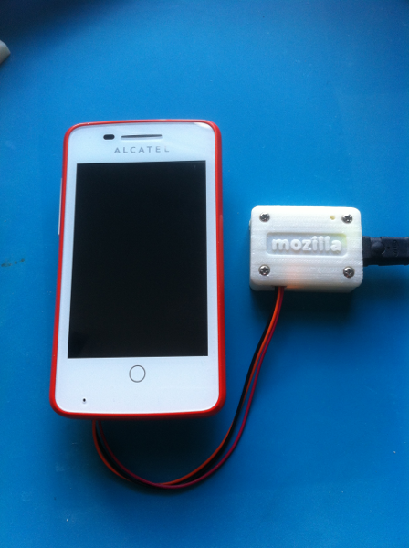
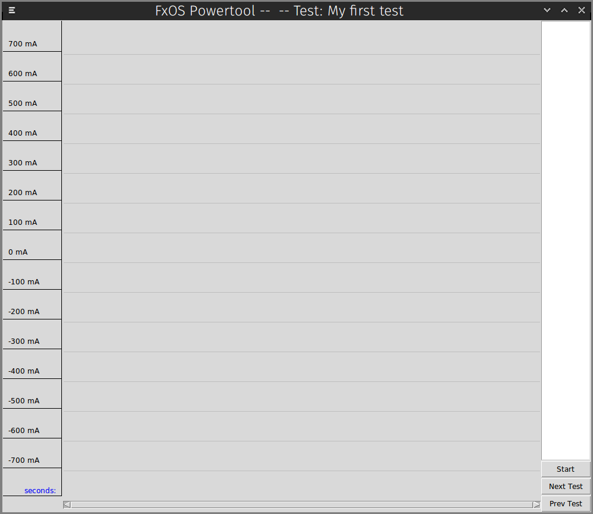
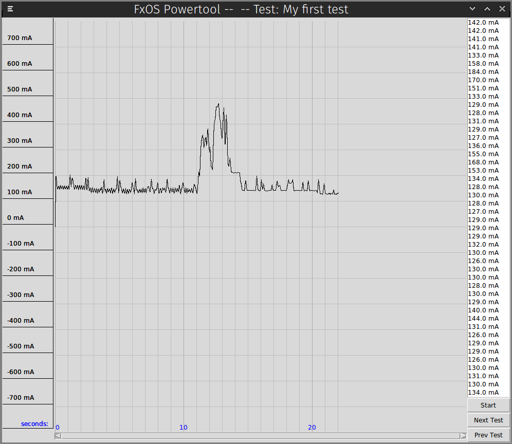
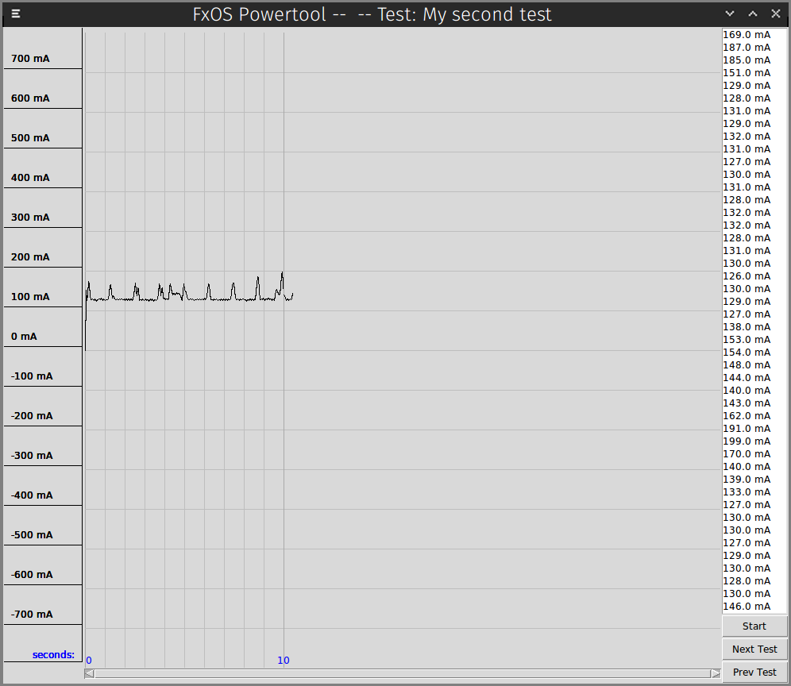
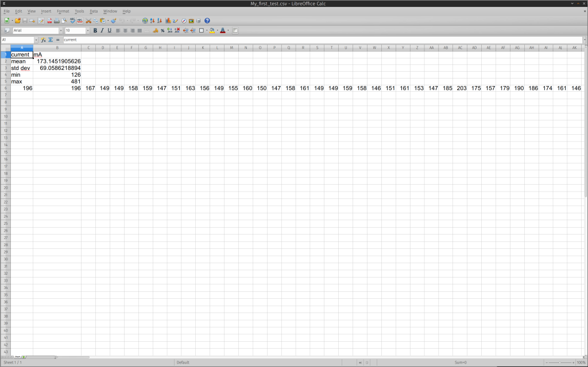

在了解並測量手機的相關運作參數時，我們接觸到許多有關耗電量的資訊。接著向大家分享使用《FxOS Powertool!》所學到的技巧。
介紹《FxOS Powertool! 》
FxOS Powertool! 可讓我們針對耗電量的部份，進行 App 的最佳化。但目前仍有錯誤等待修正。另外 FxOS Powertool! 也是命令提示字元工具的另項選擇：
usage: powertool [-h] -d {yocto,mozilla} [-p PATH] -u {tk,cli} [-f FILE]
[-o OUT] [-s SHOW]
Mozilla Powertool
optional arguments:
-h, --help show this help message and exit
-d {yocto,mozilla}, --device {yocto,mozilla}
specify ammeter device to use
-p PATH, --path PATH specify path to ammeter device (e.g. /dev/ttyACM0)
-u {tk,cli}, --ui {tk,cli}
specify which UI to use
-f FILE, --file FILE test run config file
-o OUT, --out OUT output data file
-s SHOW, --show SHOW name of the sample source to display
123456789101112131415
usage: powertool [-h] -d {yocto,mozilla} [-p PATH] -u {tk,cli} [-f FILE] [-o OUT] [-s SHOW] Mozilla Powertool optional arguments: -h, --help show this help message and exit -d {yocto,mozilla}, --device {yocto,mozilla} specify ammeter device to use -p PATH, --path PATH specify path to ammeter device (e.g. /dev/ttyACM0) -u {tk,cli}, --ui {tk,cli} specify which UI to use -f FILE, --file FILE test run config file -o OUT, --out OUT output data file -s SHOW, --show SHOW name of the sample source to display
你可複製以下 repository 取得程式碼：
$ git clone git://github.com/JonHylands/fxos-powertool
1
$ git clone git://github.com/JonHylands/fxos-powertool
FxOS Powertool! 是以 Python 撰寫而成，並搭配 Tkinter UI 套裝軟體，應該可跨平台使用。接著就安裝應用程式與其他有相依性的套裝工具：
$ cd fxos-powertool
$ sudo python ./setup.py install
12
$ cd fxos-powertool$ sudo python ./setup.py install
再來建立測試程序 (Test suite) 的敘述檔案。FxOS Powertool! 將透過敘述檔案而得知你所規劃的測試作業，並整理各次測試作業所蒐集的資料。測試程序敘述檔案就像：
{
"title": "My Tests",
"tests": [
"My first test",
"My second test",
"My third test"
]
}
12345678
{ "title": "My Tests", "tests": [ "My first test", "My second test", "My third test" ]}
設計電池外接盒
你會需要：
- 一組開放式硬體設計的電池外接盒，包含 3D 列印的零件，還有可插接電流表的小型電路板。你也可以使用所需的 3D 列印機與電路板檔案，自行打造電池外接盒。目前我們所設計的外接盒： Alcatel OneTouch Fire
- Huawei Ascend Y3000II
- 「一定要設計出酷炫東西」的堅強意志
下一步就是設定自己的硬體：
- 抽出 Firefox OS 裝置的電池，放入電池外接盒

- 將電池外接盒接回裝置

- 接上電流表


執行 FxOS Powertool!
現在你已經可以啟動 FxOS Powertool! 並蒐集資料了。
FxOS Powertool! 可將所蒐集的資料儲存為 1). JSON 與 2). 用逗號分隔的數值。另外可在「--out」選項中指定檔案的附檔名，即可儲存為所需的格式。舉下列條件為例：
- 我的測試程序敘述檔案取名為 mytests.json
- 我使用 Yoctopuce 電流表
- 我要用 Tk GUI 顯示耗電量圖表
- 我要把蒐集來的資料儲存為 .csv 檔案
那我的指令列看起來如下：
$ powertool -d yocto -p /dev/ttyUSB0 -u tk -s current -f mytests.json -
1
$ powertool -d yocto -p /dev/ttyUSB0 -u tk -s current -f mytests.json -
如果我要用 Mozilla 電流表，而且不改變測試參數的情況下：
$ powertool -d mozilla -p /dev/ttyACM0 -u tk -s current -f mytests.json
1
$ powertool -d mozilla -p /dev/ttyACM0 -u tk -s current -f mytests.json
接著就會啟動 Tk 圖形使用者介面 (GUI)，且第一次測試作業的名稱會顯示在 App 的標題列上：

如果想控制資料蒐集作業並瀏覽測試結果，則可使用 FxOS Powertool! 的快捷鍵。在 GUI 開啟的狀態下，只要點擊空白鍵即可開始/停止目前所選擇的測試作業。第一次按下空白鍵隨即開始蒐集資料，同樣再按下空白鍵就停止蒐集資料。每一次蒐集作業所得的資料，均會在輸出檔案中呈現為一列資料：

針對現有的測試作業，你可重複執行資料直到滿意為止，亦可瀏覽其他測試作業並同樣執行資料。最後也能回到上一筆測試作業繼續執行資料。FxOS Powertool! 不會遺漏任何資料，且能針對各次測試作業的資料執行結果，一併統整到正確的資料檔案中。可透過「L」與「H」鍵瀏覽所有測試作業。「L」會進入下一筆測試資料；「H」則回到上一筆。

在搜集到自己所需的測試資料後，只要退出應用程式，資料檔案隨即寫入至磁碟。點擊標題列上的關閉視窗鈕，或是直接按下鍵盤的「Q」均可退出應用程式。而此範例即根據「--out」參數值，將資料輸出為 CSV 格式並命名為「mytests.csv」。應用程式另將建立「mytests」目錄，並將各次測試所蒐集而來的資料分別輸出為 CSV 檔案。

如同本文所提及的效果，FxOS Powertool! 也將自動執行基礎的統計作業。在取得原始資料後，隨即可計算出各次測試資料的最小值、最大值、平均值、標準差等數據。